Paso 1: Ejecutar el Instalador
Haz doble clic en el archivo del instalador para comenzar.
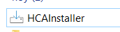Haz doble clic en el archivo del instalador para comenzar.
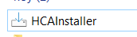Si aparece una advertencia de Windows, haz clic en “Más información” y luego en “Ejecutar de todas formas”.
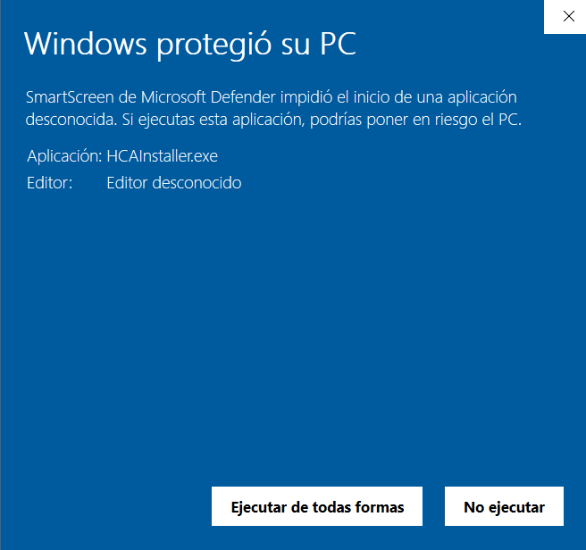Cuando el sistema solicite permisos, selecciona “Sí” para continuar con la instalación.
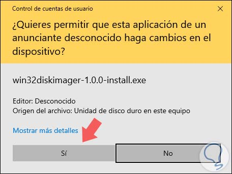Revisa los términos de licencia, acéptalos y haz clic en “Next”.
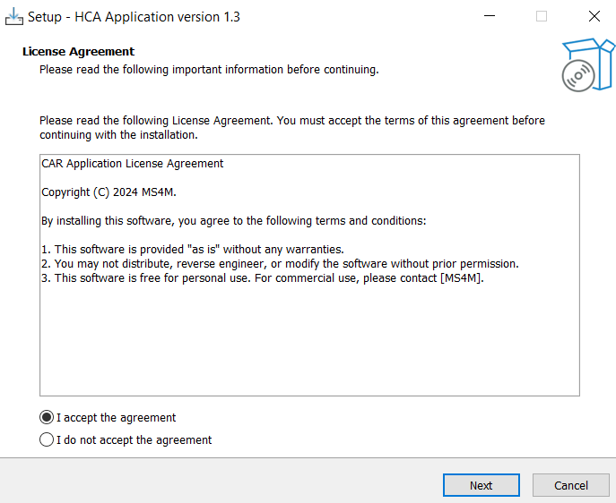Deja la ubicación predeterminada y continúa con “Next”.
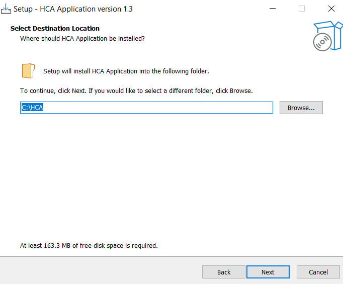Conserva la configuración por defecto y haz clic en “Next”.
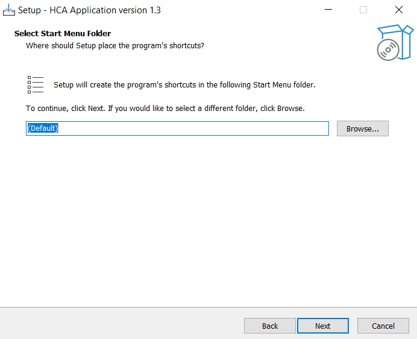Presiona “Install” para comenzar la instalación.
Importante: no cierres el instalador hasta que finalice el proceso.
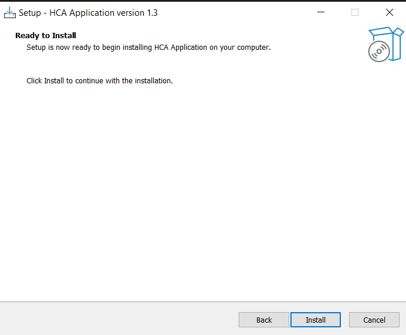Espera unos minutos mientras se completa la instalación.
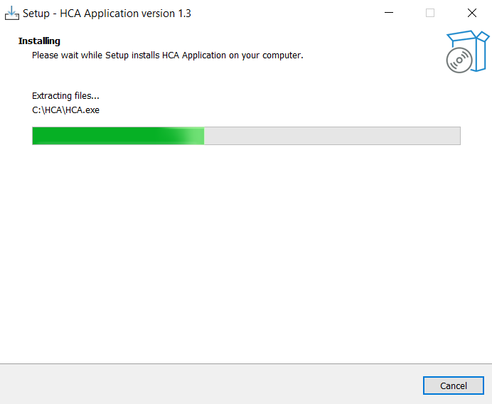Una vez concluido el proceso, haz clic en “Finish”.
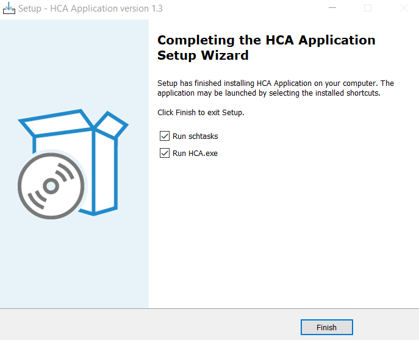Busca el ícono de la aplicación en la bandeja del sistema, junto al reloj.
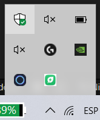Haz clic derecho sobre el ícono y selecciona “Login” en el menú contextual.
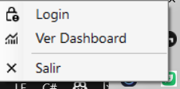Introduce tu correo electrónico y contraseña, luego haz clic en “Iniciar”.
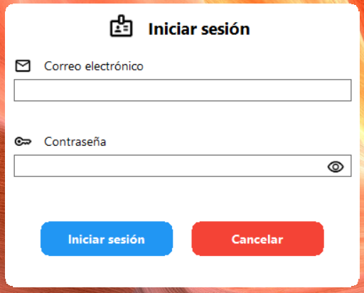Si las credenciales son correctas, se mostrará la pantalla de sesión iniciada.
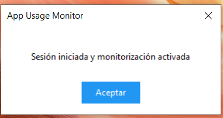